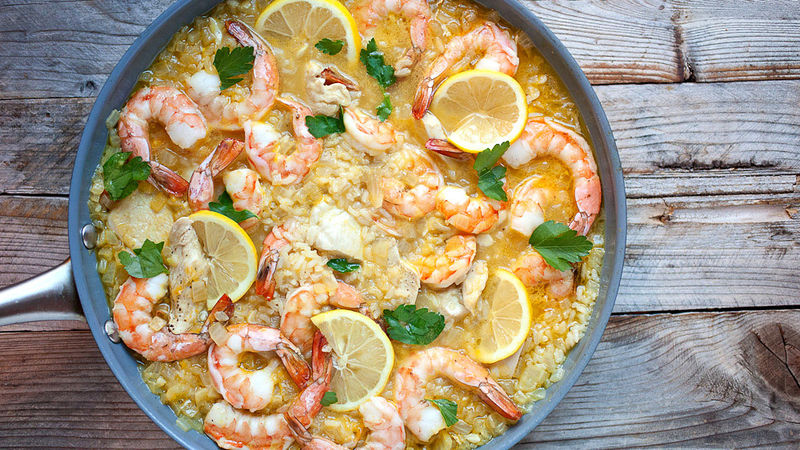

Chicken Garlic Shrimp

Description
Honestly, the trickiest part of this dish is making the sauce, but you can easily make it early in the day and refrigerate. If you do, your dish will be done in a flash! Serve as an appetizer with toothpicks, or as a main dish with rice. Garnish with fresh cilantro, if desired.Why is this paragraph in a single line in VS code girl I-
Ingredients
- 2 tablespoons chilli garlic sauce
- 2 tablespoons hoisin sauce
- 1 tablespoon tomato paste
- 1/3 cup shrimp stock
- 1/4 teaspoon sesame oil
- 2 teaspoons minced fresh ginger
- 3 tablespoons vegetable oil
<1i>2 tablespoons chopped cilantro, plus more for garnish
Steps
- Combine chili-garlic sauce, hoisin sauce, shrimp stock, tomato paste, mirin, sesame oil, 2 teaspoons minced fresh ginger, 1 clove minced garlic, shallot, and cilantro in a blender or small food processor.
- Heat oil in a large skillet or wok over medium high heat. When oil is hot, add garlic and ginger slices. Cook until browned, watching closely to avoid burning, about 2 minutes. Carefully remove garlic and ginger from the oil and discard.
- To the seasoned oil, carefully add shrimp and cook until it just begins to turn pink and curl head to tail, about 2 minutes.